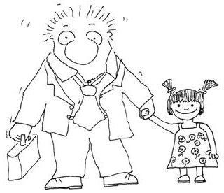

Geçenlerde bir otomobil dergisi okurken gördüm. Ağabeyim dergiye mektup yazmış: “97 model Şahinim var, beygir gücünü nasıl artırabilirim?” Usta cevaplıyor:
“Chip Tuning yaptırırsanız 7 beygir, krank milini değiştirirseniz 6 beygir, egzozları bilmem ne markayla değiştirirseniz 12 beygir artar. Yalnız bunları Isparta’da yaptırmanız biraz zor!”
Bizim olayı tam anlatıyor değil mi? Gül gül bir hâl oldum.
Aslında kitabın adı “Şahinine Tüp Taktıran Bilge” olmalıydı.

Ferrari’sini Satan Bilge’nin yazarı çok şaşırmış, kendi ülkesi de dâhil hiçbir ülkede kitap bu ilgiyi görmemiş çünkü.
Kitaba niye saldırdı bizim millet? Altı temel neden olabilir:
Bir; bizim milletin elinde ciddi bir Ferrari stoğu var, aracın ikinci eli de prim yapmıyor. “Derviş aracı elinden nasıl çıkardı acaba, ederi ne ki?” diye saldırdık.
İki; Ferrari alacaklar, binicisi araçtan memnun değil mi ki? Aracın performansı ne acaba?
Üç; herkes almış, bizim başımız kel mi?
(Robin Sharma’nın başı kel! Acaba ilacı var mı?)
Dört; bütün arkadaşlar kişisel gelişiyor, ben de gelişiyiiim.
Beş; mübarek Ramazan ayı dinî bir kitap çıkmış okuyalım.
Altı; Müjdat Sönmez isimli güvenilmez bir korsan kitapçının dolduruşu.
“İkinci el temiz bir Opel Corsa düşürebilir miyim?” diye dişini tırnağına takan bir milletin, oraları çoktan aşmış, artık Ferrari’sini elden çıkarmaya çalışan bir adamın sorunlarına odaklanması iyi kalplilikten başkasıyla açıklanamaz aslında.
Bu üç yüz bin adamın bilgeleşmeyle ilgili bir sorunları yok. Adam Ferrari’yi nasıl almış, onu öğrenmek için aldılar kitabı. Milyonlarca sinek gene yanıldık.
Hakan Özerol kardeşim anlatmıştı. Zirvede genç bir yönetici üç günlüğüne tropik bir adaya gider. Sahilde tek başına alır “laptop”u hesap-kitap derken bir adam gelir sahile, onun yaşlarında. Bir de kova. On dakikada koca koca balıklar yakalar, kovayı doldurur ve gider.
Ertesi gün aynı sahne... Üçüncü gün zıpır yönetici (Porsche veya Ferrari’sini adaya getirememiştir) gider adamın yanına.
– Niye on dakikada bırakıyorsun?
– Yetiyor bana.
– 8 saat tutsan yüzlerce kat daha fazlasını yakalar mısın?
– Evet.
– Kilosu şu kadardan, şu kadar eder. Bu parayla altı ayda üç balıkçı teknesi alırsın, yanında dokuz kişi çalışır. O tekneler sana, bak hesaba, beş yılda şu kadar kazandırır.
– Sonra?
– On yılın sonunda 100 teknen olur, paraya para demezsin.
– Sonra?
– Balık çiftlikleri kurar, ihracat yaparsın.
– Sonra?
– 50 yaşında trilyoner olursun.
– Sonra?
– Yerleşirsin deniz kıyısına, keyif yaparsın.
– Ağabey, ben şimdi zaten onu yapıyorum.
– ...
Büyük ihtimalle balıkçıyla konuşan Amerikalı Robin Sharma’ydı, fikri balıkçıdan kaptı.
Ben size bir şey söyleyeyim mi?
Gidin Almanya’ya, İngiltere’ye, insanların yüzlerine bakın ve mutsuzluğu görün. Size kitap yazan adamların çoğu sizin kadar mutlu değildir, ondan emin olun. Pozitif enerji deyip duranların belki yüzü hiç gülmüyordur.
Sizin kokladığınız domateslerin kokusunu onlar alamaz. Annenizin yaptığı yemeğin tadı onların hazır paket yemeklerinde yoktur. Kızınızın yanağınıza kondurduğu öpücükteki içtenlik onların 17 yaşında evden gönderdikleri çocukta yoktur. Onlar çocuklarını öpmez zaten. Kültürlerinde yoktur.
Edgar Alan Poe, “Kızıl Ölümün Maskesi”nde “Kendi ölümüne dek ölümün yüzü yoktur” der.
Bu kitapta adı geçen kitapların hiçbirisini, Ferrari’sini Satan Bilge de dâhil okumadım. En fazla beş dakika sayfaları karıştırdım, almam gereken alıntıyı yaptım ve kapattım kitapları.
En çok “İmam” bölümünde kastım. Türkiye’de geçen bir kitapta takdir edersiniz ki bir papaz ya da budist rahip bulma imkânım yoktu. Yiyebileceğim damgaları, alacağım eleştirileri bile bile, Talat Ağabey’i imam yaptım.
Bir gün Talat Ağabey, Kemal Atakay, Erhan aynı evdeyiz. Harbiden Balıkesir’de dönemin en lüks apartmanı (900 metre kare okyanusa bakıyor). Kemal, felsefe diyalektik takılıyor, Talat Ağabey imanlı. Akşam balıkları pişirdik, yedik içtik, müthiş güzel bir sohbet. Bunlar tartışmaya devam ettiler. Allah var-yok. Biz Erhan’la uyuduk. Gece üç gibi uyandım. Salondan sesler geliyor. Kemal 1.90 Yunan Heykeli gibi, Talat Ağabey Anadolu çocuğu. Ben odaya girdiğimde karşılıklı dikilmişler, Talat Ağabey, Kemal’e bağırıyordu: “Tut ki ben imamım. Tut ki ben imamım.” Ben gülmekten yerlerde. Yıl 1991. Talat Ağabeyimin kitapta imam olması o akşamdandır. “Ben kasabım” dese kasaptı gerçekten. Kitapta ve imamın anlattıklarında dinî hiçbir şey yok. Ama öyle bir propaganda makinesinin çarkları arasında kalmışız ki kendi ülkenin dinini temsil eden bir adamı kullanırken korkuyorsun. “Hangi gazeteci beni infaz edecek acaba?” diye. Eğer bir papazı kullansaydım, yemin ederim hiç strese girmezdim. Onların kitaplarında mutlaka Hz. İsa’ya birçok referans bulursunuz. Bizse yazamayız. Takip edin bakalım, beni kimler infaz edecek. Kitabın bütününe baktığımda yazarken çok güldüm.
Gözlerinizden öpüyorum.
Alaplı
Karadeniz kıyısı
Metruk bir balıkçı masası
9 Kasım 2005